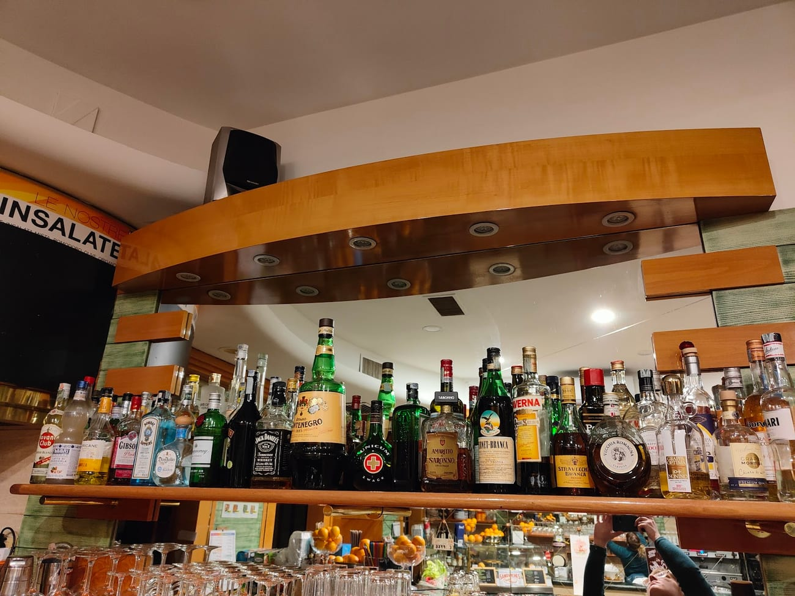

Torrefazione & bar · Corso San Gottardo
Tostato qui, servito al banco
Torrefazione Colombia è un caffè di quartiere come si deve: i chicchi si tostano in un piccolo laboratorio a due passi, poi arrivano al banco e finiscono in tazza freschi, uno dopo l'altro. Per i clienti abituali è, semplicemente, il miglior caffè di Milano.
«Il miglior caffè che troverai a Milano.»
Un bar gestito da donne, con un'accoglienza calorosa, dove lo stesso banco ti accompagna dall'espresso e la brioche del mattino alla focaccia di mezzogiorno fino allo spritz della sera. E il caffè si compra anche sfuso, per portarsi a casa un po' di Ticinese.
Torrefazione di quartiere
Al banco dal mattino
Di proprietà di donne
Caffè sfuso da comprare
